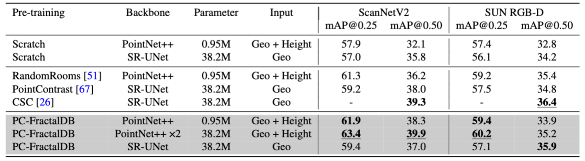

Point Cloud Pre-training with
Natural 3D Structures
Ryosuke Yamada1 Hirokatsu Kataoka1 Naoya Chiba2 Yasuyuki Domae1 Tetsuya Ogata
1: AIST 2: Waseda Universsity
Abstract
The construction of 3D point cloud datasets requires a great deal of human effort. Therefore, constructing a large-scale 3D point clouds dataset is difficult.
In order to remedy this issue, we propose a newly developed point cloud fractal database (PC-FractalDB), which is a novel family of formula-driven supervised learning inspired by fractal geometry encountered in natural 3D structures.
Our research is based on the hypothesis that we could learn representations from more real-world 3D patterns than conventional 3D datasets by learning fractal geometry.
We show how the PC-FractalDB facilitates solving several recent dataset-related problems in 3D scene understanding, such as 3D model collection and labor-intensive annotation.
The experimental section shows how we achieved the performance rate of up to 61.9% and 59.4% for the ScanNetV2 and SUN RGB-D datasets, respectively, over the current highest scores obtained with the PointContrast, contrastive scene contexts (CSC), and RandomRooms.
Moreover, the PC-FractalDB pre-trained model is especially effective in training with limited data. For example, in 10\% of training data on ScanNetV2, the PC-FractalDB pre-trained VoteNet performs at 38.3%, which is +14.8% higher accuracy than CSC.
Of particular note, we found that the proposed method achieves the highest results for 3D object detection pre-training in limited point cloud data.
Framework
Overview of the formula-driven supervised learning framework for 3D object detection with 3D point clouds.
We generate a 3D fractal model using the 3D iterated function system.
The proposed PC-FractalDB is automatically constructed by difiniting a fractal category using variance threshold and instance augmentation with FractalNoiseMix.
A 3D fractal scene is generated by randomly selecting 3D fractal models and translating these from the origin on the z-plane.
Experimental Results
3D object detection comparisons on representative datasets.
We employed architecture with the basic VoteNet model and used them to compare network pre-training methods, including training from scratch, PointContrast, CSC, RandomRooms, and the PC-FractalDB.

Additional Results
The PC-FractalDB pre-train can acquire effective features compared to previous self-supervised learning methods for limited data on fine-tuning datasets.
Citation
Dataset Download
-
PC-FractalDB-1k (1k categories x 500 instances; Total 500k models).
[Dataset (**GB)]
Acknowledgement
- This work is based on results obtained from a project, JPNP20006, commissioned by the New Energy and Industrial Technology Development Organization (NEDO).
- Computational resource of AI Bridging Cloud Infrastructure (ABCI) provided by National Institute of Advanced Industrial Science and Technology (AIST) was used.